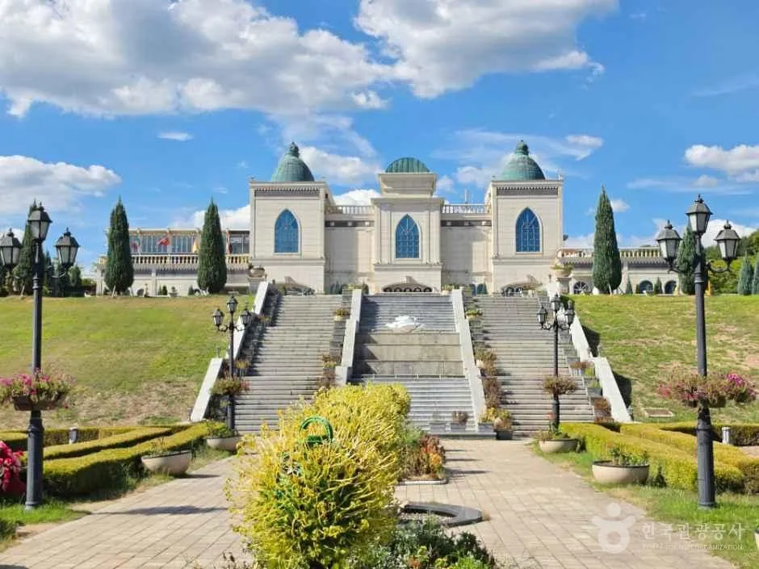
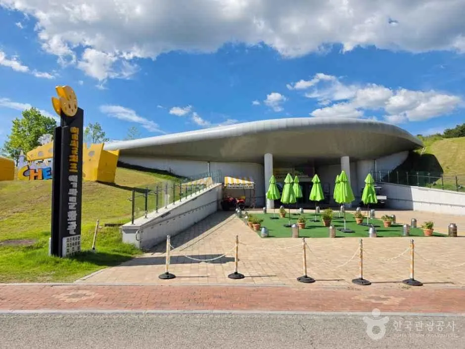
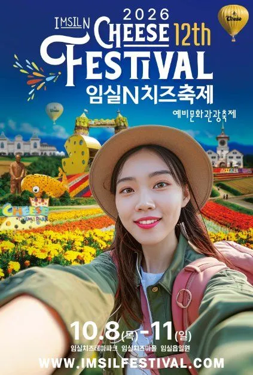
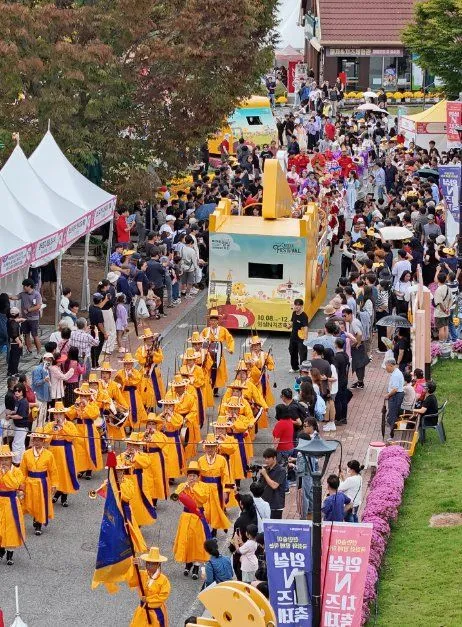
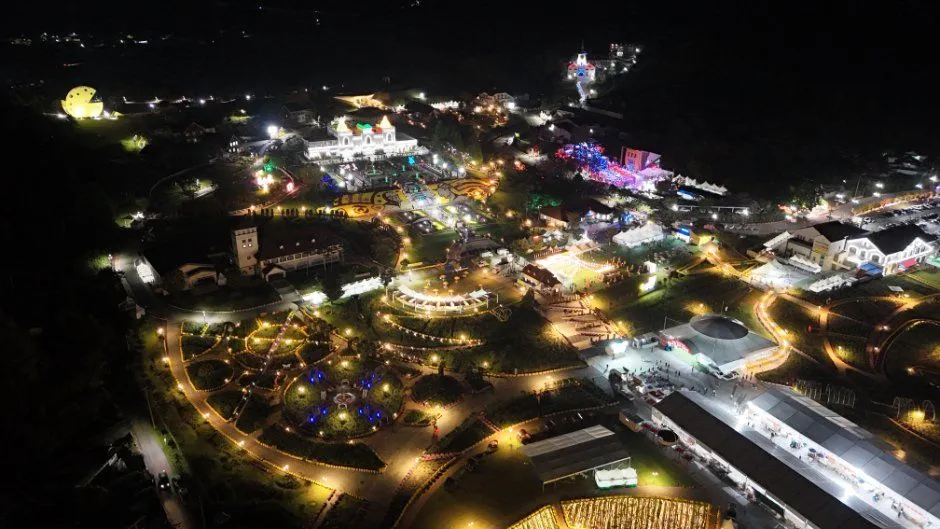
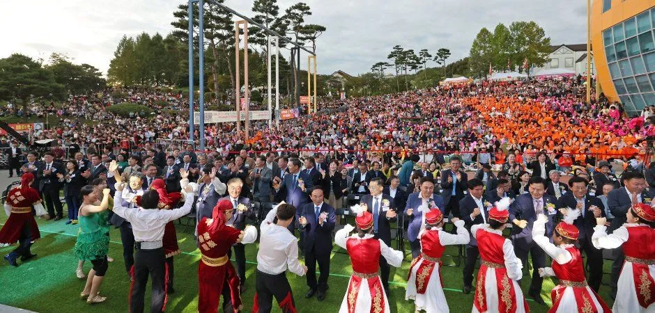
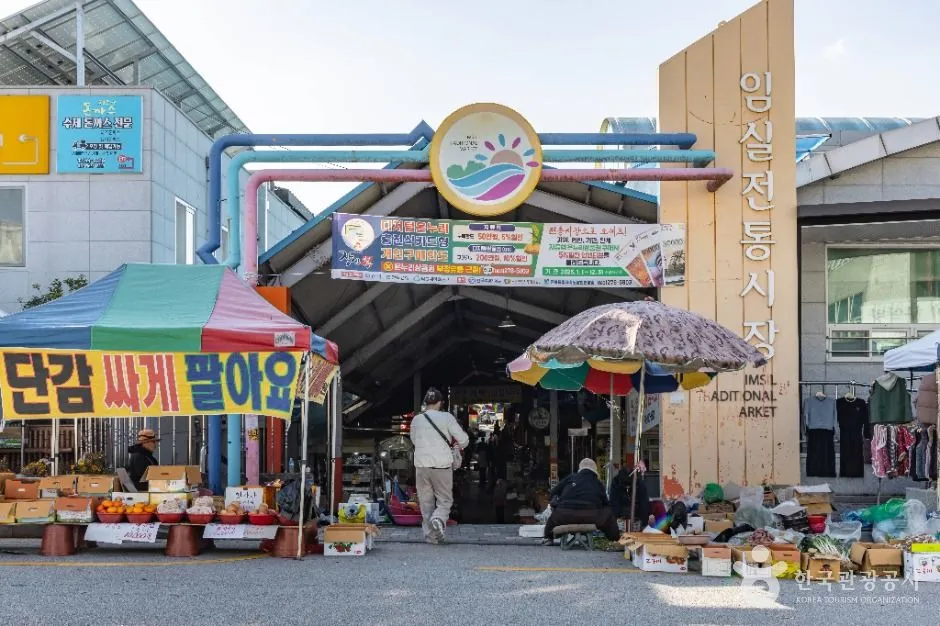
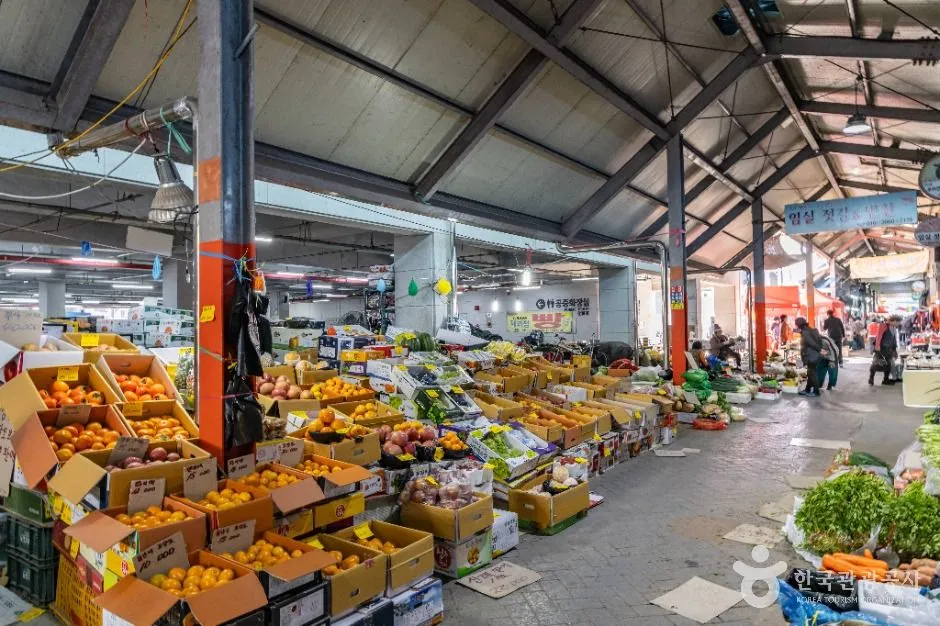
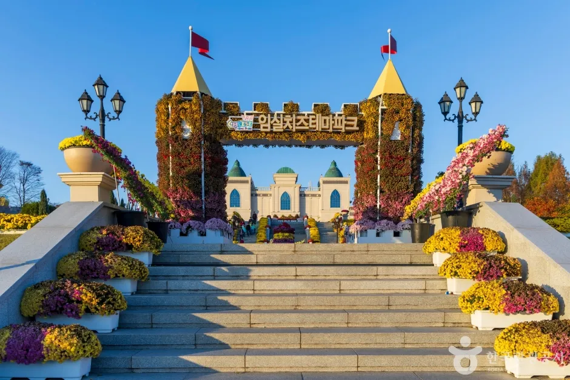
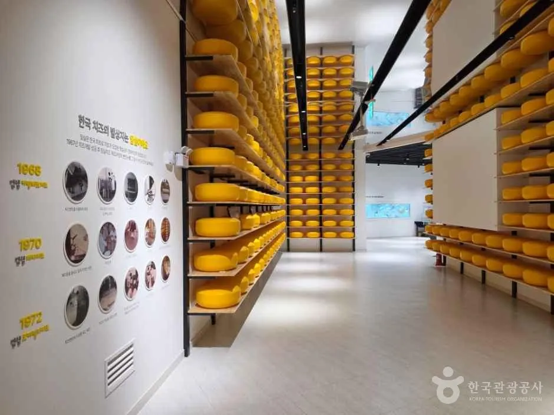

▲ 임실치즈테마파크 항공 사진. 이전 개최 때 촬영된 한국관광공사 축제 사진이다. 사진=한국관광공사
"입장은 공짜라는데, 체험하려면 얼마를 준비해야 할까?" 제12회 임실N치즈축제가 내일(10월 8일 목요일)부터 11일(일요일)까지 4일간 임실치즈테마파크·치즈마을·임실읍 일원에서 열린다. 이 글은 자차로 가는 사람을 위해 축제 공식 누리집(imsilfestival.com)의 주차장·셔틀버스·행사일정·프로그램 페이지를 직접 열어 확인한 내용을 중심으로, 체험비와 혼잡 대비 요령까지 정리했다. 치즈테마파크의 역사와 지정환 신부 이야기는 임실치즈테마파크 기사에서 다뤘으므로 여기서는 축제 기간에 달라지는 점에 집중한다. 공식 누리집에서 확인되지 않은 항목은 본문에 "확인하지 못했다"고 표시했다.
1. 한눈에 보기 — 일정·장소·규모
▲ 임실치즈테마파크 항공 사진. 이전 개최 때 촬영된 한국관광공사 축제 사진으로, 정원과 건물 배치가 보인다. 사진=한국관광공사
| 항목 | 내용 | 확인 출처 |
|---|---|---|
| 행사명 | 2026 임실N치즈축제(제12회) | 공식 누리집 축제개요 |
| 일시 | 2026년 10월 8일(목)~11일(일), 4일간 | 공식 누리집·언론 일치 |
| 장소 | 임실치즈테마파크, 임실치즈마을, 임실읍 일원 | 공식 누리집 축제개요 |
| 주소(본부) | 전북특별자치도 임실군 성수면 도인리 687 | 공식 누리집 하단 |
| 주최·주관 | 임실N치즈축제 제전위원회 | 공식 누리집 |
| 문의 | 063-643-3900 | 공식 누리집 하단 표기 |
| 프로그램 규모 | 10개 테마 64개 프로그램 | 공식 누리집 주요 프로그램 페이지 합산(70개는 지난해 5일 개최 보도의 숫자) |
| 입장료 | 무료로 알려졌으나 공식 누리집에는 입장료 문구가 없음 | 언론 보도 기준, 공식 미확인 |
| 체험비 | 일부 유료(5,000~20,000원), 사전접수가 현장접수보다 저렴 | 공식 누리집 프로그램 상세 페이지 |
ℹ️ 최종 안내는 공식 누리집에서
주차장·셔틀버스·행사일정은 임실N치즈축제 공식 누리집에서 확인할 수 있다. 임실N치즈축제 누리집 바로가기
"프로그램이 70개라던데 왜 64개냐"는 의문이 생길 수 있다. 70개는 올해가 아니라 지난해(2025년 10월 8~12일, 5일간) 개최 때 보도된 숫자(전북일보, 10개 테마 70개 프로그램, 당시 역대 최대 규모)다. 올해는 하루 줄어든 4일이고, 공식 누리집 주요 프로그램 페이지는 "10개 테마 / 64개 프로그램"이라고 적고 있고 테마별 괄호 숫자(특별한 치즈 8, 뽐내는 치즈 4, 빛나는 치즈 4, 다함께 치즈 9, 치즈마을 치즈 5, 재밌는 치즈 12, 볼만한 치즈 3, 맛깔난 치즈 10, 더불어 치즈 6, 임실읍 치즈이야기 3)를 더하면 64가 된다. 이 글은 공식 숫자를 따랐다. 올해 프로그램이 지난해보다 6개 줄어든 구체적 이유는 확인하지 못했다.
2. 자차 경로 — 순천완주고속도로 임실IC가 관문

▲ 테마파크의 성 모양 건물과 계단 정원. 승용차 도착 지점은 이 일대 주차장과 셔틀 승강장이다. 사진=한국관광공사
공식 누리집 "찾아오시는길"은 모든 출발지의 승용차 경로가 순천완주고속도로의 임실IC교차로를 거쳐 임실치즈테마파크로 들어가는 것으로 안내한다. 지역별 경로와 거리는 아래와 같다(공식 안내의 구간별 거리를 옮긴 것이며 소요 시간은 안내되지 않았다).
| 출발지 | 경로 | 구간 거리 합계 |
|---|---|---|
| 서울 | 경부고속도로 88.2km → 천안논산고속도로 82.9km → 순천완주고속도로 33.7km → 임실IC교차로 | 약 204.8km |
| 대전 | 호남고속도로지선 43.4km → 호남고속도로 14.5km → 순천완주고속도로 33.7km → 임실IC교차로 | 약 91.6km |
| 광주 | 호남고속도로 11.8km → 88올림픽고속도로 43.1km → 순천완주고속도로 29.2km → 임실IC교차로 | 약 84.1km |
| 부산 | 남해제2고속도로지선 20.4km → 남해고속도로 137.9km → 순천완주고속도로 82.0km → 임실IC교차로 | 약 240.3km |
| 전주 | 기린대로 1.8km → 춘향로 8.9km → 순천완주고속도로 18.9km → 임실IC교차로 | 약 29.6km |
구간 거리 합계는 위 숫자를 단순히 더한 값이다(임실IC교차로에서 테마파크까지의 거리는 공식 안내에 없어 포함하지 않았다). 시외버스로 오는 경우 서울은 서울남부터미널에서 임실시외버스터미널로, 대전·부산은 전주시외버스터미널을 거쳐 임실시외버스터미널로 가라고 안내한다. 임실시외버스터미널에서 테마파크까지 축제 기간 연결 방법은 공식 안내에서 확인하지 못했다.
3. 주차장 8곳 3,400면 — 만차 때는 읍내로 우회
공식 누리집 주차장 안내에는 8곳이 올라 있다. 맨 위에는 "행사장 만차, 임실읍 소재지 우회 진입 후 셔틀버스 탑승"이라는 안내가 붙어 있다. 즉 테마파크 앞 주차장이 차면 읍내로 돌아가 셔틀을 타라는 뜻이다. 8곳의 주차 가능 대수를 더하면 3,400면이다.
| 연번 | 주차장 | 주차 가능 대수 | 주소 |
|---|---|---|---|
| 1 | 임실치즈테마파크 | 400 | 성수면 도인리 896-2 |
| 2 | 비슬마을 주차장 | 150 | 성수면 도인리 902-5 |
| 3 | 화물자동차 공영차고지 | 230 | 성수면 도인로 50 |
| 4 | 치즈마을 제2주차장 | 600 | 임실읍 금성리 928-2 |
| 5 | 갈마제설창고 주차장 | 900 | 임실읍 갈마리 262 |
| 6 | 갈마사거리 주차장 | 200 | 임실읍 갈마리 380 |
| 7 | 임실군청 주차장 | 500 | 임실읍 수정로 30 |
| 8 | 임실읍 농공단지 | 420 | 임실읍 감성리 529-1 |

▲ 테마파크 광장 일대. 가까운 주차장은 400면(테마파크)·150면(비슬마을)뿐이라 일찍 차는 구조다(상시 풍경). 사진=한국관광공사
숫자로 보면 테마파크 바로 옆 주차장(1·2번)은 합쳐 550면에 불과하고, 큰 자리는 읍내 쪽인 갈마제설창고(900면), 치즈마을 제2주차장(600면), 임실군청(500면), 농공단지(420면)에 있다. 아래 셔틀 노선과 맞춰 보면 갈마제설창고 주차장이 셔틀 제2코스 출발지로, 대형 7대가 배정되어 있다. 처음부터 갈마제설창고나 군청 쪽에 대는 것이 정체와 대기를 줄이는 방법으로 보이지만, 이는 노선 배치에서 읽은 추정이며 현장 만차 시점과 대기 시간은 공식 누리집에 없다. 주차 요금은 확인하지 못했다(공식 페이지에 요금 문구가 없음).
4. 셔틀버스 — 임실 4개 코스, 전주 2개 코스
공식 셔틀버스 안내는 크게 임실노선 4개 코스(14대: 대형 11대·중형 3대)와 전주노선 2개 코스(대형 9대)로 나뉜다. 임실노선은 읍내 주차장에서 테마파크까지 이어 주고, 전주노선은 전주에서 곧바로 테마파크로 간다. 아래는 공식 안내의 코스 구성이다.
| 코스 | 배정 | 구간 |
|---|---|---|
| 제1코스 | 대형 4대 | 임실생활체육공원 ↔ 상통사거리 ↔ 임실e마트 ↔ 임실군청 ↔ 임실고 ↔ 갈마회전교차로 ↔ 갈마사거리 ↔ 임실치즈테마파크 |
| 제2코스 | 대형 7대 | 임실갈마제설창고 ↔ 갈마회전교차로 ↔ 갈마사거리 ↔ 임실치즈테마파크 |
| 제3코스 | 중형 1대 | 임실역 ↔ 갈마회전교차로 ↔ 갈마사거리 ↔ 임실치즈테마파크 |
| 제4코스 | 중형 2대 | 치즈마을 제1주차장(코스모스 주차장) ↔ 치즈마을 제2주차장(테마파크 뒤편 주차장) |
| 구분 | 내용 |
|---|---|
| 코스 구성 | 제1코스 대형 4대: 전주종합경기장 ↔ 전주시청(민원실 앞) ↔ 전주한옥마을(라한호텔 앞) ↔ 임실치즈테마파크 / 제2코스 대형 2대: 전주시청 ↔ 한옥마을 ↔ 테마파크 ↔ 전주종합경기장(하차만) |
| 전주 출발 | 첫차 08:00(전주종합경기장 벽계가든 맞은편), 전주시청 08:10, 한옥마을 08:20, 임실 도착 09:00. 이후 30분~1시간 간격(일부 시간대는 전주시청 출발)으로 표기, 마지막 전주 출발 15:30(임실 도착 16:30) |
| 임실 출발 | 첫차 11:00(전주 도착 12:00), 11:00~14:00은 30분 간격, 이후 15:00·16:00·16:30·17:00·17:30·18:00·19:00·20:00·21:00, 마지막 21:00 출발(전주 도착 22:00) |
| 요금·운행일 | 요금과 4일 중 어느 날 운행하는지는 공식 안내에서 확인하지 못함 |
전주노선은 전주종합경기장·시청·한옥마을 어디서든 탈 수 있어 전주에서 1박 하거나 한옥마을에 차를 세운 여행객에게 유리하다. 다만 전주한옥마을 주변은 평소에도 주차가 어려운 곳이라 전주한옥마을 무료주차장 기사를 함께 보고 차를 둘 곳을 정하는 편이 낫다. 공식 시간표상 한옥마을 08:20 출발·임실 09:00 도착으로 40분 걸리고, 승용차 경로는 구간 거리 합계 약 29.6km라 거리 대비 시간 차이가 크지 않아, 주차 부담을 감수하고 직접 운전하는 이점은 크지 않아 보인다(추정).
5. 일자별 프로그램 — 개막식이 읍내에서 열린다

▲ 2026 임실N치즈축제 포스터. 10월 8일~11일, 임실치즈테마파크 일원으로 표기돼 있다. 사진=한국관광공사(원본 비율 유지)
축제의 가장 큰 변화는 개막식 장소다. 지난해까지 테마파크에서 열던 개막식을 올해는 임실읍 시내로 옮겨 관광객의 소비가 지역 상권으로 이어지도록 했다는 보도(supple 등)가 있었고, 공식 누리집 공연 안내에도 "여는치즈 - 2026 임실N치즈축제 개막식, 10월 8일 18:00, 임실읍 시내권 특설무대"로 확인된다. 17:00부터 식전공연(임실 필봉농악 '임실 취타대', '글로벌 임실N치즈')이 열리고, 18:00에 개막하며 18:25 개막 주제공연 뒤 18:30~20:30 개막 축하공연(박지현·전유진·허찬미·세이마이네임이 공식 안내에 소개됨)이 이어진다. 개막 당일 저녁에 읍내로 향하는 차량이 몰릴 가능성이 높지만, 읍내 교통통제 구간은 공식 안내에서 확인하지 못했다.
| 날짜 | 낮 시간대 | 저녁 시간대 |
|---|---|---|
| 10/8(목) | 11:00 지정환 신부 에끌로 퍼레이드, 13:00~14:00 쭉쭉늘려 내치즈 만들기(분수광장), 14:00~15:30 디저트 퐁뒤체험, 15:30 임실N치즈 골든벨 | 17:00 식전공연, 18:00 개막식(임실읍 시내권 특설무대) |
| 10/9(금) | 10:00 골든벨, 11:00 에끌로 퍼레이드, 13:00~14:30 쌀피자 만들기, 13:00~15:00 가족요리 경연대회(지정환 홀), 15:00~16:30 퐁뒤체험 | 18:00~20:30 치즈N와인 나이트(시계탑광장), 18:00 임실필봉농악 지정환 신부 치즈 탄생 이야기(테마파크 특설무대) |
| 10/10(토) | 11:00 퍼레이드, 13:00~14:30 쭉쭉늘려 내치즈(2,000m·테마파크 메인 동선), 15:30~17:00 퐁뒤체험, 09:00~18:00 전국 국악경연대회(지정환 홀) | 18:00~20:30 와인 나이트, 18:30 임실N치즈 콘서트(35사단 군악대·팝핀현준 & 박애리 등) |
| 10/11(일) | 10:00~11:00 치즈경매, 11:00 퍼레이드, 13:00~14:30 쌀피자 만들기, 15:00~16:00 내치즈 만들기(분수광장) | 17:30 제13회 임실치즈품평회 시상식, 18:00 폐막식(닫는치즈), 폐막공연 |

▲ 이전 개최 때의 축제 퍼레이드 장면. 올해는 지정환 신부 스토리 에끌로 퍼레이드가 매일 11:00에 열린다. 사진=한국관광공사

▲ 이전 개최 때의 테마파크 야경 항공 사진. 올해도 10월 9~10일 와인 나이트, 10일 치즈 콘서트 등 저녁 프로그램이 이어진다. 사진=한국관광공사(원본 비율 유지)
공식 프로그램 안내에 따르면 매일 11:00~12:00 임실치즈테마파크 주요 동선에서 열리는 지정환 신부 스토리 에끌로 퍼레이드는 지정환 신부 역할 퍼포머, 임실 농부·목동 퍼포머 20명, 산양 캐릭터 5명, 임실N치즈 캐릭터(피치·무우·야미·쿠쿠선장·피자공주) 등이 참여하는 스토리형 행렬이다. 그 밖에 10월 9~10일 야간 프로그램은 시계탑광장에서 치즈 플래터·와인·뱅쇼·치즈퐁듀를 판매하고 불멍존과 재즈 공연을 운영하며, 현장 체험비는 6,000원으로 안내된다. 읍내 쪽에서는 임실시장의 드론축구·스탬프 투어(10:00~20:00), 12개 읍면 향토음식관·한우명품관(10:00~20:00)이 운영된다고 공식 일정표 하단에 적혀 있다.
6. 체험비 — 사전접수가 1,000~5,000원 싸다
입장은 무료로 알려졌지만, 대표 체험은 대부분 유료다. 공식 누리집 프로그램 상세 페이지에 요금이 나온 항목을 모았다. 사전접수 요금이 현장접수보다 낮게 책정된 프로그램이 많다.
| 프로그램 | 일시·장소 | 사전 | 현장 |
|---|---|---|---|
| 디저트 퐁뒤체험(저지종 우유·숙성치즈) | 10/8 14:00~15:30, 10/9 15:00~16:30, 10/10 15:30~17:00, 특설무대 앞 | 5,000원 | 7,000원 |
| 임실N치즈 쌀피자 만들기(대형 쌀피자) | 10/9·10/11 13:00~14:30, 특설무대 앞(스타 셰프 쿠킹쇼 기간 중 1회) | 15,000원 | 20,000원 |
| 임실N치즈 푸드 페스타 | 10/8·9·11 10:00~12:00·13:00~17:00, 시계탑광장 | 5,000원 | 6,000원 |
| 피치실버 행운이벤트(릴레이 3종경기) | 10/8~11 11:00~12:30, 특설무대 앞, 총 10회차·회차별 20명 | 5,000원 | 7,000원 |
| 숙성치즈 굴리기·탑쌓기 이벤트 | 특설무대 앞(공식 페이지에 일정 "확인중"으로 표기) | 5,000원 | 7,000원 |
| 치즈와인 나이트(10/9~10) | 18:00~20:30, 시계탑광장 | - | 6,000원 |
| 유청 족욕 힐링체험 | 축제 기간 10:00~17:00, 시계탑광장 일원(족욕 후 치즈 간식 제공) | 공식 상세 페이지에 요금 문구 없음(유료 여부 확인하지 못함) | |
ℹ️ 참가 신청은 공식 누리집에서
사전접수는 축제 누리집의 프로그램 참가신청 페이지(2026.09.17 공지)에서 진행된다. 사전접수 마감 시점은 확인하지 못했다. 프로그램 참가신청 공지 바로가기
가장 비싼 쌀피자는 사전 15,000원·현장 20,000원으로 5,000원 차이가 난다. 퐁뒤체험은 사전 5,000원이면 저지종 우유와 숙성치즈로 만든 퐁뒤에 임실 농특산물을 곁들일 수 있다. 가족 4명이 퐁뒤와 푸드 페스타를 각각 사전접수로 하면 40,000원이고 현장접수로 하면 52,000원이다(단순 계산, 체험별 참가 인원 제한은 공식 페이지 확인 필요). 당일 줄이 길 때 현장접수를 포기하게 되는 경우가 많으므로 사전 신청 쪽이 이득이다.
먹거리 예산은 향토음식관 메뉴표로 가늠
식사 비용은 공식 누리집 "맛깔난 치즈(음식)" 페이지의 12개 읍·면 향토음식관 메뉴표가 참고가 된다. 다만 이 표에는 "2025 임실N치즈축제 향토음식관 12개읍·면 메뉴"라는 제목이 붙어 있어 올해 가격 확정치는 아니다. 올해 향토음식관(10:00~20:00)이 운영된다는 사실만 행사일정표로 확인되고 2026년 메뉴·가격은 확인하지 못했다. 지난해 표기 가격의 대표 사례는 아래와 같다.
| 읍·면 | 메뉴(용량) | 가격 |
|---|---|---|
| 임실읍 | 한우육개장(550g) / 잔치국수(500g) / 돼지고기수육(200g) | 10,000원 / 5,000원 / 15,000원 |
| 청웅면 | 웰빙비빔밥(550g) / 치즈호떡(3개) | 10,000원 / 5,000원 |
| 성수면 | 사골청국장(550g) / 홍어삼겹삼합(300g) | 10,000원 / 30,000원 |
| 오수면 | 한우 소머리곰탕(550g) / 식혜(350ml) | 13,000원 / 3,000원 |
| 관촌면 | 치즈돈가스(160g) / 치즈스틱(50g) / 핫도그(120g) | 10,000원 / 3,000원 / 3,000원 |
메뉴표만 보면 한 끼 식사가 대개 10,000원 안팎이고, 안주류는 15,000~30,000원대다. 성인 2명이 퐁뒤(사전 5,000원씩)와 식사 1메뉴씩(10,000원 가정)을 하면 30,000원쯤이지만, 이는 지난해 표기 가격을 단순 대입한 추정이다.
7. 혼잡 시간대와 자차 요령 — 확인된 것과 추정

▲ 이전 개최 때 야외 공연장을 가득 메운 관람객. 인파가 몰리는 시간대가 있다는 점을 보여 주는 자료 사진이다. 사진=한국관광공사
확인된 사실부터 보면, 지난해(제11회, 5일간) 축제는 방문객 61만여 명으로 역대 최고 기록(전년 58만여 명, 총매출 30억 8,300만 원)을 세웠다는 보도가 전북일보·파이낸셜뉴스 등에서 일치한다. 올해는 이를 감안해 셔틀버스를 확대하고 버스전용차로를 운영하기로 했다고 전북일보(2026년 2월 19일)가 전했다. 반대로 지난해에는 개막 첫날(10월 8일)부터 주차 대란이 빚어져 "주차장에서 나오는 데 2시간 반 갇혀 있었다", 주차 대기 3시간 끝에 입장을 포기했다는 민원이 임실군 홈페이지와 온라인 커뮤니티에 올라왔고, 안내 인력 부족도 지적됐다(전북일보 2025년 10월 9일). 올해 개막일 저녁에 읍내로 차가 몰릴 수 있다고 본 이유다. 버스전용차로가 운영되는 구간과 시간대는 공식 누리집 어디에도 없어 확인하지 못했다. 아래는 공식 일정표를 근거로 한 추정이다.
| 시간대 | 근거 | 자차 대응 |
|---|---|---|
| 10/8(목) 16:00~18:00 | 읍내 특설무대 17:00 식전공연·18:00 개막 | 읍내 주차장(군청 500면·농공단지 420면)은 일찍 차고 도로가 막힐 수 있어 15시 이전 도착 권장 |
| 10/10(토)·10/11(일) 11:00~13:00 | 주말, 에끌로 퍼레이드 11:00와 체험 프로그램 집중 | 갈마제설창고(900면)로 직행해 셔틀 이용 |
| 10/10(토) 17:00~19:00 | 치즈 콘서트 18:30와 와인 나이트 18:00 동시 진행 | 귀가 시 셔틀 막차·도로 정체 고려 |
| 10/9(금) 낮 | 평일이라 상대적으로 한산할 것으로 추정 | 체험 위주 방문에 유리 |
✅ 출발 전 체크리스트
· 10/8~11, 임실치즈테마파크·치즈마을·임실읍 일원. 개막식은 10/8 18:00 읍내 특설무대
· 승용차는 순천완주고속도로 임실IC교차로, 만차 땐 읍내 우회 후 셔틀 이용
· 주차장 8곳 3,400면, 가장 큰 곳은 갈마제설창고 900면(셔틀 제2코스 출발지)
· 전주 출발 셔틀 첫차 08:00, 임실 출발 막차 21:00
· 체험비 사전접수가 저렴(퐁뒤 5,000원, 쌀피자 15,000원), 일부 프로그램 요금은 미확인
· 문의 063-643-3900
8. 인근 코스 — 임실읍·옥정호와 묶기

▲ 임실시장 입구. 축제 기간 시장에서는 드론축구와 스탬프 투어가 열린다고 안내돼 있다(사진은 상시 풍경). 사진=한국관광공사
임실읍 코스는 개막식이 열리는 시내권의 임실시장·임실성당과 이어진다. 공식 누리집 "임실읍 치즈이야기"에는 임실시장(상인회 연계 먹거리장터·지역 예술단체 공연), 임실성당(지정환 신부 연계 성지순례객 유치, 플리마켓·버스킹), 대한민국 최초 치즈공장(치즈마을 홍보관, 토굴)이 축제 기간 연계 운영으로 소개된다. 임실N치즈 스탬프 투어는 테마파크·치즈마을·시내권을 연결해 기념품을 준다고 적혀 있지만 운영 시간과 기념품 종류는 "일정 확인중"이라 확인하지 못했다.

▲ 임실시장 내부. 시장은 읍내 주차장과 가까워 셔틀 대기 중 들를 수 있다(상시 풍경). 사진=한국관광공사
축제 전후 하루를 더 쓴다면 옥정호 붕어섬 출렁다리 기사의 가을 새벽 물안개 코스가 있다. 치즈테마파크 자체의 시설·치즈 만들기 체험은 임실치즈테마파크 기사를 참고하되, 축제 기간의 운영 시간은 위 일정표를 기준으로 하는 편이 정확하다. 이 글에 쓴 사진 가운데 축제 현장 사진은 이전 개최 때의 한국관광공사 자료이고, 임실시장·치즈테마파크 사진은 상시 풍경이며 이번 축제 현장이 아니다.

▲ 국화로 꾸민 테마파크 성문 입구. 가을 시즌 이전 촬영 사진으로, 올해 꽃 장식 상태는 확인하지 못했다(상시 풍경). 사진=한국관광공사(원본 비율 유지)

▲ 임실치즈테마파크 안 치즈 전시 공간. 상시 시설로 이번 축제 현장 사진이 아니다. 사진=한국관광공사
9. 정리
제12회 임실N치즈축제는 10월 8~11일 임실치즈테마파크·치즈마을·임실읍 일원에서 열리며, 개막식(10/8 18:00)은 올해 임실읍 시내권 특설무대로 옮겨졌다. 공식 누리집 기준 프로그램은 10개 테마 64개(보도의 70개는 지난해 5일 개최 숫자)이고, 대표 체험인 퐁뒤체험은 사전 5,000원·현장 7,000원, 쌀피자 만들기는 사전 15,000원·현장 20,000원이다.
자차는 순천완주고속도로 임실IC교차로로 진입해 주차장 8곳(총 3,400면) 중 가장 넓은 갈마제설창고(900면) 쪽을 쓰고, 테마파크 앞이 만차이면 읍내로 우회해 임실노선 셔틀(4개 코스)을 타는 구성이다. 전주에서는 08:00부터 21:00까지 시간표가 공개된 전주노선 셔틀이 있다. 지난해에는 개막일부터 주차 대란이 있었다는 점도 기억해 두자. 입장료 무료 여부, 버스전용차로 구간, 셔틀 요금, 유청 족욕 요금은 확인하지 못했으니 출발 전에 공식 누리집과 063-643-3900으로 재확인하자.